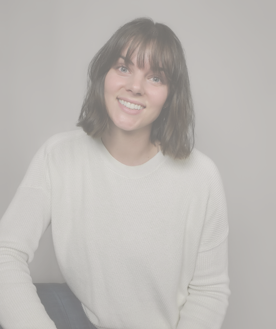
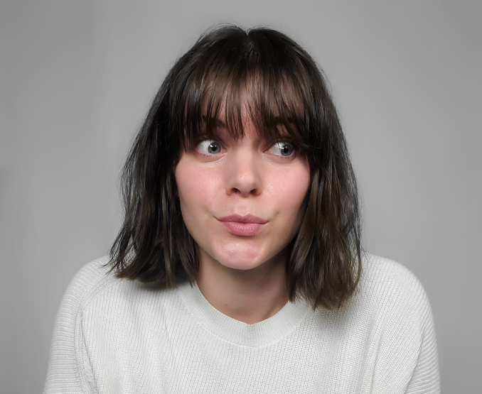
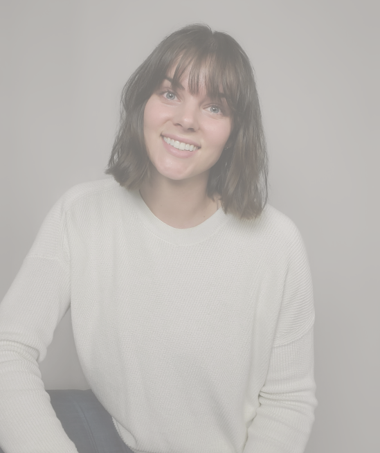
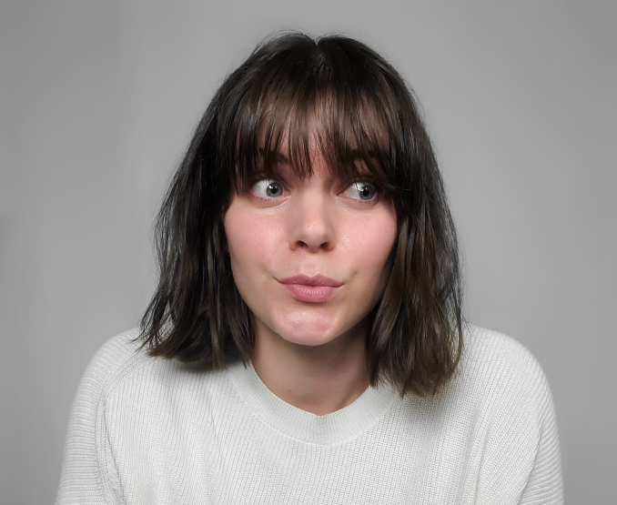
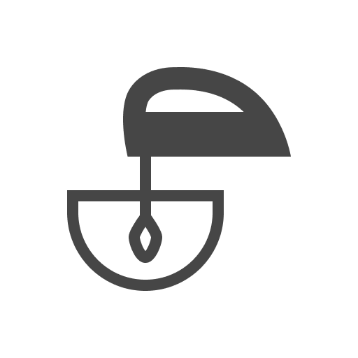
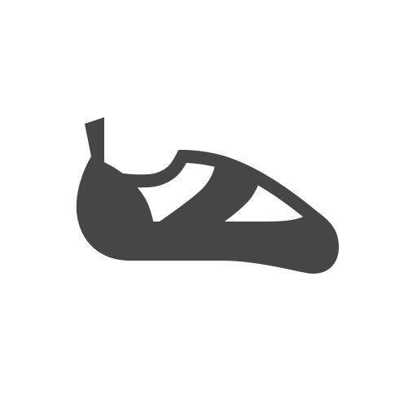
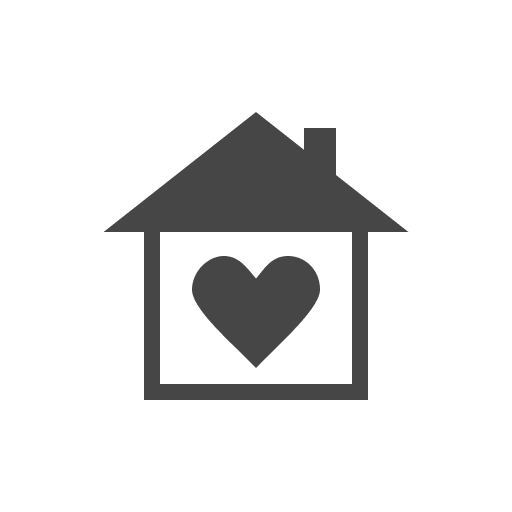
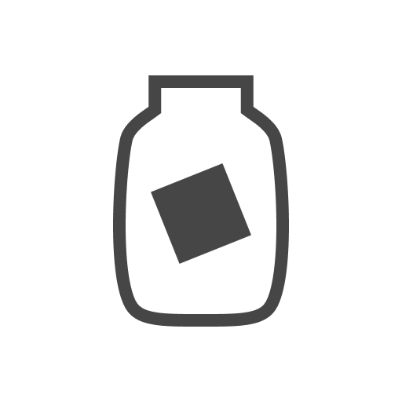
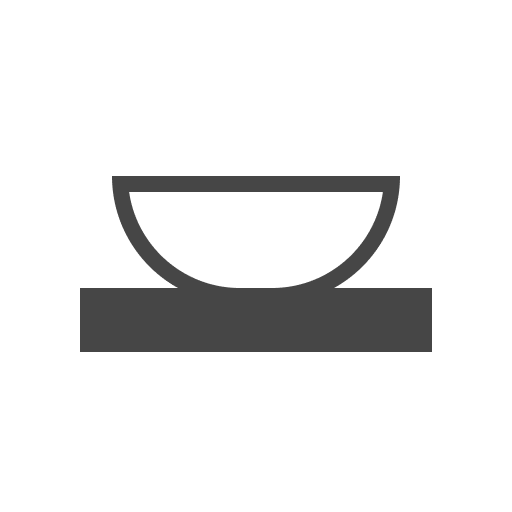
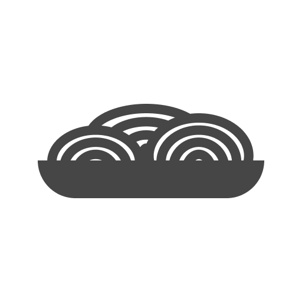

“Every great design begins with an even better story.”
- Lorinda Mamo, Designer
My Story
I learned the power of guiding design with a story when I worked as an interior designer. A beautiful design is hollow without a purpose. People need a solid ‘why’ before they will buy in. I can raise my right hand and swear to everything holy that I love design and feel like it’s my perfect match. That my interests and aptitudes align with the skills needed to be a great designer. But that sentiment is hollow without the full story.
I’ve always been creative. As a kid, my favorite pastime was designing my ‘dream house’. I preferred designing over drawing pictures because it gave me a problem to solve. Like many creatives, I was very introspective, always the observer. In high school, I took AP Psychology and my eyes were opened to a deeper level of the human experience. I was hooked. I graduated college with a degree in health sciences, planning to continue on to medical school. Instead, my husband and I decided to travel full-time, living out of our car.
After 1 year, 50 states, and 60,000 miles, I had pushed myself, done hard things, and learned to trust myself.
I got an internship in interior design in Salt Lake City. It was a painfully steep learning curve. I knew nothing about the business, the design process, or even the software they used. But within a couple of months, I was up to speed and loving working in design. I was flexing so many mental muscles - designing layouts, selecting finishes, combing through construction documents, and working with a great team. But in the back of my mind, there was still something missing. I wanted to do more to help people.
I started the UX design mentorship at Bloc in September of 2019. During my time in the program, I fell more in love with design than ever before. Practicing UX design satisfies all of my passions - creativity, psychology, problem solving, and helping people. I fancy myself something of a sleuth, searching for clues and solving puzzles. I am thrilled that I found my way to UX design and I’m excited to solve the next puzzle.
My Favorite Things
Environment

Baking

Rock Climbing
Mystery Novels

Family

New Girl
Yoga
Travel
Environment

Pottery
Riddles

Noodles
Feminism